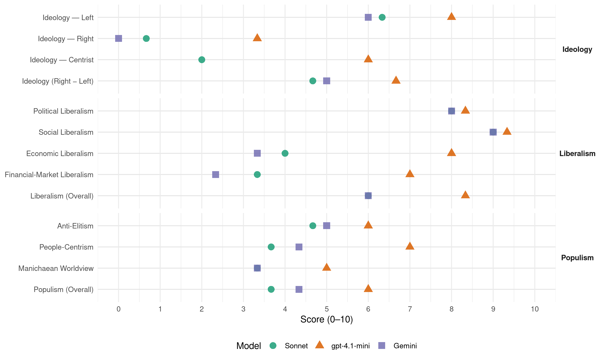

90/Greens (Germany, 1994)
manifesto_id 41113_199410
Get full text: This site shows derived annotations and short verbatim quotes only. The full manifesto text is © Manifesto Project / WZB — obtain it via manifesto-project.wzb.eu using the manifesto_id above.
Headline scores
| Dimension | Sonnet | gpt-4.1-mini | Gemini |
|---|---|---|---|
| Populism (Overall) | 3.7 | 6.0 | 4.3 |
| Anti-Elitism | 4.7 | 6.0 | 5.0 |
| People-Centrism | 3.7 | 7.0 | 4.3 |
| Manichaean Worldview | 3.3 | 5.0 | 3.3 |
| Ideology (Right − Left) | 4.7 | 6.7 | 5.0 |
| Liberalism (Overall) | 6.0 | 8.3 | 6.0 |
| Political Liberalism | 8.0 | 8.3 | 8.0 |
| Social Liberalism | 9.0 | 9.3 | 9.0 |
| Economic Liberalism | 4.0 | 8.0 | 3.3 |
| Financial-Market Liberalism | 3.3 | 7.0 | 2.3 |
Evidence per dimension
Economic Liberalism
Gemini · score 4.0 · verified · chunk 1
“Stärkung der Kartell- und Fusionskontrolle”
Wettbewerbsaufsicht immer schwächer geworden. Eine wichtige wirtschaftspolitische Aufgabe ist deshalb die Stärkung der Kartell- und Fusionskontrolle.
Gemini · score 3.0 · verified · chunk 2
“Primärenergiesteuer, durch die das Energiesparen und”
Instrument zur Reduktion des Energieverbrauchs ist eine Primärenergiesteuer, durch die das Energiesparen und
Gemini · score 3.0 · verified · chunk 3
“Regelung fester Ladenpreise für Literatur”
Der halbierte Mehrwertsteuersatz für Bücher bleibt ebenso erhalten wie die Regelung fester Ladenpreise für Literatur.
gpt-4.1-mini · score 9.0 · verified · chunk 1
“freie Marktwirtschaft, Wettbewerb, Deregulierung”
Die Abschaffung des Depotstimmrechts; einschneidende Beschränkungen für die von Banken und Versicherungen gehaltenen Anteile an anderen Unternehmen; die Pflicht zur Offenlegung aller Beteiligungen über drei Prozent; höchstens drei Aufsichtsratsmandate pro Person. ÖKOLOGISCHES WIRTSCHAFTEN DURCHSETZEN! Die Politik muß die Rahmenbedingungen für den ökologischen Aufbruch unseres Wirtschaftens setzen. Die Subvention umweltbelastender Produktionszweige muß abgebaut werden.
gpt-4.1-mini · score 8.0 · verified · chunk 2
“Die Umkehr dieses verhängnisvollen Prozesses ist von der Bio-Landwirtschaft als Nischenproduktion nicht zu leisten”
Die Umkehr dieses verhängnisvollen Prozesses ist von der Bio-Landwirtschaft als Nischenproduktion nicht zu leisten, im Gegenteil, die Bio-Betriebe laufen Gefahr, in einen vergleichbaren verhängnisvollen Preiskampf zu geraten. Auch auf dem Bio-Markt steht nach neuesten Entwicklungen nicht mehr gesunde Lebensmittelproduktion, sondern der Kampf um den Markt im Vordergrund.
gpt-4.1-mini · score 7.0 · verified · chunk 3
“ökologisch-solidarischen Umbau der Wirtschaftsweise Europas”
…Der nötige ökologisch-soziale Umbau der Wirtschaftsweise Europas ist ohne eine gesamteuropäische Öffnung nicht denkbar und ohne einen Demokratieschub nicht durchsetzbar. …
Sonnet · score 4.0 · mixed · chunk 1
“marktwirtschaftlichen Instrumenten verbunden werden”
Das Ordnungsrecht muß jedoch mit wirksamen marktwirtschaftlichen Instrumenten verbunden werden. Die Einflußnahme auf die Preisbildung ist ein entscheidender Hebel für eine ökologische Wirtschaftspolitik.
Sonnet · score 4.0 · mixed · chunk 2
“Subventionen verringert und das Steuersystem vereinfacht”
die Effizienz öffentlicher Verwaltung steigert, Subventionen verringert und das Steuersystem vereinfacht; die katastrophale Verschuldung des Staates wirksam begrenzt
Sonnet · score 4.0 · verified · chunk 3
“Antidiskriminierungsgesetz, das auch für die Privatwirtschaft”
Ein Antidiskriminierungsgesetz, das auch für die Privatwirtschaft klare Quotierungsregeln, verbindliche Frauenförderpläne und Maßnahmen zum Schutz vor sexueller Belästigung vorsieht
Financial-Market Liberalism
Gemini · score 3.0 · verified · chunk 1
“Verringerung der Bankenkonzentration, die Entflechtung der Banken”
Wettbewerbsaufsicht. Insbesondere die Verringerung der Bankenkonzentration, die Entflechtung der Banken von Nicht-Banken-Unternehmen und die Verstärkung der Bankenaufsicht
Gemini · score 2.0 · verified · chunk 2
“Besteuerung spekulativer Anlageformen ebenso notwendig wie”
Darüberhinaus sind aber auch Steuererhöhungen unverzichtbar, wobei die Besteuerung spekulativer Anlageformen ebenso notwendig wie die
Gemini · score 2.0 · verified · chunk 3
“Intensivierung der Steuer-, Subventions- und Bankenaufsicht”
Dazu bedarf es u.a. einer Intensivierung der Steuer-, Subventions- und Bankenaufsicht sowie einer Entfilzung von Wirtschaft, Politik und Verwaltung.
gpt-4.1-mini · score 8.0 · verified · chunk 1
“Stärkung der Kartell- und Fusionskontrolle”
Eine wichtige wirtschaftspolitische Aufgabe ist deshalb die Stärkung der Kartell- und Fusionskontrolle. Insbesondere die Verringerung der Bankenkonzentration, die Entflechtung der Banken von Nicht-Banken-Unternehmen und die Verstärkung der Bankenaufsicht führt zu einer stärkeren demokratischen Kontrolle der Banken.
gpt-4.1-mini · score 6.0 · verified · chunk 2
“Unbestreitbar hat auch die starke Deregulierung des Finanzsektors seit den siebziger Jahren zusammen mit der Globalisierung der Finanzmärkte dazu geführt”
Unbestreitbar hat auch die starke Deregulierung des Finanzsektors seit den siebziger Jahren zusammen mit der Globalisierung der Finanzmärkte dazu geführt, daß der Finanzbereich weitgehend von der Sachkapitalbildung abhebt. Das außerordentliche Wachstum spekulativen Kapitals bringt erhebliche Instabilität in die Finanzsysteme und bindet für den Umbau der Produktionsbasis dringend benötigtes Kapital.
Sonnet · score 3.0 · verified · chunk 1
“Einschränkung der Macht der Banken”
EINSCHRÄNKUNG DER MACHT DER BANKEN — Eine funktionierende Marktwirtschaft gibt es in Deutschland nur in wenigen Ausnahmebereichen. Die Unternehmenskonzentration ist gewachsen, die Wettbewerbsaufsicht immer schwächer geworden.
Sonnet · score 3.0 · verified · chunk 2
“starke Deregulierung des Finanzsektors seit den siebziger Jahren”
Unbestreitbar hat auch die starke Deregulierung des Finanzsektors seit den siebziger Jahren zusammen mit der Globalisierung der Finanzmärkte dazu geführt, daß der Finanzbereich weitgehend von der Sachkapitalbildung abhebt.
Sonnet · score 4.0 · verified · chunk 3
“Intensivierung der Steuer-, Subventions- und Bankenaufsicht”
Dazu bedarf es u.a. einer Intensivierung der Steuer-, Subventions- und Bankenaufsicht sowie einer Entfilzung von Wirtschaft, Politik und Verwaltung.
Political Liberalism
Gemini · score 8.0 · verified · chunk 1
“Erhalt und die Erweiterung demokratischer Grundrechte”
Beteiligungsmöglichkeiten für Bürgerinnen und Bürger an politischen Entscheidungen, den Erhalt und die Erweiterung demokratischer Grundrechte, eine gut informierte und kritische
Gemini · score 8.0 · verified · chunk 2
“Ergänzung der repräsentativen Demokratie durch direkte”
fordern deshalb die Ergänzung der repräsentativen Demokratie durch direkte Demokratie in Bund, Ländern
Gemini · score 8.0 · verified · chunk 3
“Demokratie verträgt keine Denkverbote. Sie lebt von der geistig-politischen Auseinandersetzung”
Demokratie verträgt keine Denkverbote. Sie lebt von der geistig-politischen Auseinandersetzung. Zensur und Bespitzelung darf es auch angesichts der rechtsextremen Gefahr nicht wieder geben.
gpt-4.1-mini · score 9.0 · verified · chunk 1
“Demokratie und Bürgerrechte ausbauen, Minderheiten stärken”
DEMOKRATIE UND BÜRGERINNERECHTE AUSBAUEN, MINDERHEITEN STÄRKEN, FREI UND SICHER MITEINANDER LEBEN Gegen Haß und Ausgrenzung - für Selbstbestimmung, Toleranz und Solidarität I. Direkte demokratische Entscheidungsrechte schaffen - II. Grund- und Freiheitsrechte ausbauen III. Flüchtlinge aufnehmen, Bürgerrechte für nationale und ethnische Minderheiten durchsetzen, Recht auf Einwanderung einführen IV. Rechte von diskriminierten Minderheiten ausbauen V. Vergangenheit aufarbeiten als Voraussetzung für eine demokratische Zukunft
gpt-4.1-mini · score 8.0 · verified · chunk 2
“Demokratie lebt davon, daß BürgerInnen emanzipiert und selbstbewußt ihre Freiheitsrechte wahrnehmen”
Demokratie lebt davon, daß BürgerInnen emanzipiert und selbstbewußt ihre Freiheitsrechte wahrnehmen, um den gesellschaftlichen Raum auszugestalten. Deshalb müssen die individuellen und sozialen Grundrechte vor dem Zugriff des Staates bewahrt werden. Die BürgerInnen haben aber auch Anspruch auf staatlichen Schutz vor physischer Bedrohung durch Dritte, um sich frei von Angst entfalten zu können.
gpt-4.1-mini · score 8.0 · verified · chunk 3
“Demokratisierung der Außen- und Sicherheitspolitik ein”
…BÜNDNIS 90/DIE GRÜNEN treten für die Demokratisierung der Außen- und Sicherheitspolitik ein. Diese Demokratisierung, die gesellschaftliche Aktivität, die öffentliche Debatte sind heute notwendiger denn je. …
Sonnet · score 8.0 · verified · chunk 1
“Erhalt und die Erweiterung demokratischer Grundrechte”
WIR WOLLEN EINE DEMOKRATISCHE GESELLSCHAFT: Beteiligungsmöglichkeiten für Bürgerinnen und Bürger an politischen Entscheidungen, den Erhalt und die Erweiterung demokratischer Grundrechte, eine gut informierte und kritische Öffentlichkeit.
Sonnet · score 8.0 · verified · chunk 2
“Ergänzung der repräsentativen Demokratie durch direkte Demokratie”
BÜNDNIS 90/DIE GRÜNEN fordern deshalb die Ergänzung der repräsentativen Demokratie durch direkte Demokratie in Bund, Ländern und Gemeinden.
Sonnet · score 8.0 · verified · chunk 3
“umfassende Demokratisierung der Hochschulen”
Wir wollen eine umfassende Demokratisierung der Hochschulen. Ihre Entscheidungsstrukturen müssen so verändert werden, daß sie gleichberechtigte Mitwirkungsmöglichkeiten aller Hochschulangehörigen garantieren.
Liberalism (Overall)
Gemini · score 6.0 · verified · chunk 1
“Erhalt und die Erweiterung demokratischer Grundrechte”
Beteiligungsmöglichkeiten für Bürgerinnen und Bürger an politischen Entscheidungen, den Erhalt und die Erweiterung demokratischer Grundrechte, eine gut informierte und kritische
Gemini · score 6.0 · verified · chunk 2
“Ergänzung der repräsentativen Demokratie durch direkte”
fordern deshalb die Ergänzung der repräsentativen Demokratie durch direkte Demokratie in Bund, Ländern
Gemini · score 6.0 · verified · chunk 3
“Demokratie verträgt keine Denkverbote. Sie lebt von der geistig-politischen Auseinandersetzung”
Demokratie verträgt keine Denkverbote. Sie lebt von der geistig-politischen Auseinandersetzung. Zensur und Bespitzelung darf es auch angesichts der rechtsextremen Gefahr nicht wieder geben.
gpt-4.1-mini · score 9.0 · verified · chunk 1
“Demokratie und Bürgerrechte ausbauen, Minderheiten stärken”
DEMOKRATIE UND BÜRGERINNERECHTE AUSBAUEN, MINDERHEITEN STÄRKEN, FREI UND SICHER MITEINANDER LEBEN Gegen Haß und Ausgrenzung - für Selbstbestimmung, Toleranz und Solidarität I. Direkte demokratische Entscheidungsrechte schaffen - II. Grund- und Freiheitsrechte ausbauen III. Flüchtlinge aufnehmen, Bürgerrechte für nationale und ethnische Minderheiten durchsetzen, Recht auf Einwanderung einführen IV. Rechte von diskriminierten Minderheiten ausbauen V. Vergangenheit aufarbeiten als Voraussetzung für eine demokratische Zukunft
gpt-4.1-mini · score 8.0 · verified · chunk 2
“Wir bekennen uns zu einer Finanz- und Haushaltspolitik, die den BürgerInnen reinen Wein einschenkt”
Wir bekennen uns zu einer Finanz- und Haushaltspolitik, die den BürgerInnen über die in der Ära Kohl aufgelaufenen und die vor uns liegenden Belastungen reinen Wein einschenkt, die Effizienz öffentlicher Verwaltung steigert, Subventionen verringert und das Steuersystem vereinfacht; die katastrophale Verschuldung des Staates wirksam begrenzt und schrittweise zurückführt; wir wollen keine Erhöhung der Nettokreditaufnahme zur Finanzierung unserer reformpolitischen Vorschläge; durch ein ausgewogenes Gesamtkonzept die Lasten so verteilt, daß die wirtschaftlich Starken auch ihren gerechten Teil schultern, durch strukturelle Reformen für ökologisches Wirtschaften und neue Solidarität den Rahmen setzt.
gpt-4.1-mini · score 8.0 · verified · chunk 3
“Demokratisierung der Außen- und Sicherheitspolitik ein”
…BÜNDNIS 90/DIE GRÜNEN treten für die Demokratisierung der Außen- und Sicherheitspolitik ein. Diese Demokratisierung, die gesellschaftliche Aktivität, die öffentliche Debatte sind heute notwendiger denn je. …
Sonnet · score 6.0 · verified · chunk 1
“Demokratie, d. h. freie Information und tatsächliche Mitentscheidungsmöglichkeiten”
Demokratie, d. h. freie Information und tatsächliche Mitentscheidungsmöglichkeiten der BürgerInnen und abhängig Beschäftigten über ihre Belange, endet vor den Toren der Werke und Verwaltungen.
Sonnet · score 6.0 · verified · chunk 2
“individuelle Freiheits-, Gleichstellungs- und Teilhaberechte verankern”
Diese neue Verfassung soll die demokratische Organisation des Staates voranbringen, seine soziale Verantwortung festschreiben und die individuellen Freiheits-, Gleichstellungs- und Teilhaberechte verankern.
Sonnet · score 6.0 · verified · chunk 3
“Demokratisierung der Außen- und Sicherheitspolitik”
BÜNDNIS 90/DIE GRÜNEN treten für die Demokratisierung der Außen- und Sicherheitspolitik ein.
Anti-Elitism
Gemini · score 6.0 · verified · chunk 1
“Parteien und Politiker haben in den vergangenen Jahren viel Ansehen verloren.”
Kurskorrektur in der Bundesrepublik einzuleiten. Parteien und Politiker haben in den vergangenen Jahren viel Ansehen verloren. Wir möchten dazu beitragen, daß Bürgerinnen und
Gemini · score 6.0 · verified · chunk 2
“eigennützige Machtinteressen zu setzen”
mißbraucht, um an dessen Stelle eigennützige Machtinteressen zu setzen. Ihr Einfluß in Rundfunkräten
Gemini · score 3.0 · verified · chunk 3
“staatlichen und parteipolitischen Einfluß in den Rundfunk- und Fernsehräten zurückzudrängen”
Wir fordern, den staatlichen und parteipolitischen Einfluß in den Rundfunk- und Fernsehräten zurückzudrängen und diese Gremien einer breiteren gesellschaftlichen Kontrolle zu öffnen.
gpt-4.1-mini · score 6.0 · verified · chunk 1
“Parteien und Politiker haben in den vergangenen Jahren viel Ansehen verloren”
Unser wichtigstes Ziel ist es, die Regierung Kohl abzulösen, um eine soziale und ökologische Kurskorrektur in der Bundesrepublik einzuleiten. Parteien und Politiker haben in den vergangenen Jahren viel Ansehen verloren. Wir möchten dazu beitragen, daß Bürgerinnen und Bürger sich durch die, die sie gewählt haben, wieder vertreten fühlen.
gpt-4.1-mini · score 5.0 · verified · chunk 2
“Die Bundesregierung ist selbst zum finanzpolitischen Risikofaktor Nummer 1”
Die finanzpolitische Unvernunft der Bundesregierung droht die Gesellschaft in die Irre zu führen. Deshalb wollen wir die Regierung ablösen. Wir bekennen uns zu einer Finanz- und Haushaltspolitik, die den BürgerInnen über die in der Ära Kohl aufgelaufenen und die vor uns liegenden Belastungen reinen Wein einschenkt, die Effizienz öffentlicher Verwaltung steigert, Subventionen verringert und das Steuersystem vereinfacht; die katastrophale Verschuldung des Staates wirksam begrenzt und schrittweise zurückführt; wir wollen keine Erhöhung der Nettokreditaufnahme zur Finanzierung unserer reformpolitischen Vorschläge; durch ein ausgewogenes Gesamtkonzept die Lasten so verteilt, daß die wirtschaftlich Starken auch ihren gerechten Teil schultern, durch strukturelle Reformen für ökologisches Wirtschaften und neue Solidarität den Rahmen setzt.
gpt-4.1-mini · score 7.0 · verified · chunk 3
“Hintermänner und Drahtzieher inzwischen erheblichen Einfluß”
…Profit bei Banken »gewaschen« und wieder in legale Unternehmen investiert wird, ist zu befürchten, daß Hintermänner und Drahtzieher inzwischen erheblichen Einfluß auf wirtschaftliche und auch staatliche Entscheidungen erlangt haben. Auch in diesen Kriminalitätsbereichen müssen organisierten Banden von vornherein die Profit- und Einflußmöglichkeiten genommen werden. Dazu bedarf es u.a. einer Intensivierung der Steuer-, Subventions- und Bankenaufsicht sowie einer Entfilzung von Wirtschaft, Politik und Verwaltung. …
Sonnet · score 5.0 · verified · chunk 1
“Bundesregierung und Unternehmer unterdessen eine lautstarke Dauerdebatte”
Anstatt dies zu ändern, führen Bundesregierung und Unternehmer unterdessen eine lautstarke Dauerdebatte über die Zukunft des »Wirtschaftsstandorts Deutschland«
Sonnet · score 4.0 · verified · chunk 2
“Hoch subventionierte Agrarfabriken, Handels- und Nahrungsmittelkonzerne und die EG-Bürokratie verdienen gut am bisherigen System”
am bisherigen System – doch auf Kosten der Allgemeinheit, die die entstehenden Krankheits-, Sozial- und Umweltkosten aufzubringen hat.
Sonnet · score 5.0 · verified · chunk 3
“eurokratischen Eliten in Wirtschaft, Politik und Intelligenz”
Die Krise des »Maastricht-Konzeptes« für die Europäische Union ist eine Krise der eurokratischen Eliten in Wirtschaft, Politik und Intelligenz, die das bisherige EG-Europa im wesentlichen hinter dem Rücken der beteiligten Völker
Ideology — Centrist
gpt-4.1-mini · score 7.0 · verified · chunk 1
“Wir möchten dazu beitragen, daß Bürgerinnen und Bürger sich durch die, die sie gewählt haben, wieder vertreten fühlen”
Parteien und Politiker haben in den vergangenen Jahren viel Ansehen verloren. Wir möchten dazu beitragen, daß Bürgerinnen und Bürger sich durch die, die sie gewählt haben, wieder vertreten fühlen. Wir möchten aber auch ausländische Bürgerinnen und Bürger vertreten, die, obwohl sie seit vielen Jahren in Deutschland leben, noch immer nicht wählen dürfen.
gpt-4.1-mini · score 6.0 · verified · chunk 2
“BÜNDNIS 90/DIE GRÜNEN wollen Politik mit den BürgerInnen und nicht über ihre Köpfe hinweg machen”
BÜNDNIS 90/DIE GRÜNEN wollen Politik mit den BürgerInnen und nicht über ihre Köpfe hinweg machen. Gegen Politikverdrossenheit und Zuschauerdemokratie setzen wir ein Konzept der direkten Beteiligung der BürgerInnen an den politischen Entscheidungen – auf allen Ebenen. Ohne breite gesellschaftliche Diskussionen und aktive Beteiligungs- und Entscheidungsrechte werden weitsichtige Lösungen gerade der drägenden Probleme nicht möglich sein.
gpt-4.1-mini · score 5.0 · verified · chunk 3
“Demokratisierung der Außen- und Sicherheitspolitik ein”
…BÜNDNIS 90/DIE GRÜNEN treten für die Demokratisierung der Außen- und Sicherheitspolitik ein. Diese Demokratisierung, die gesellschaftliche Aktivität, die öffentliche Debatte sind heute notwendiger denn je. …
Sonnet · score 2.0 · verified · chunk 1
“parteiübergreifend und unter Einbeziehung von Betroffenen”
Dieser Meinungsaustausch und die Suche nach Problemlösungen müssen parteiübergreifend und unter Einbeziehung von Betroffenen, Interessenvertretungen und Fachleuten erfolgen.
Sonnet · score 2.0 · verified · chunk 2
“Gegen Politikverdrossenheit und Zuschauerdemokratie”
Gegen Politikverdrossenheit und Zuschauerdemokratie setzen wir ein Konzept der direkten Beteiligung der BürgerInnen
Sonnet · score 2.0 · verified · chunk 3
“populistischen Forderung nach schärferen Gesetzen”
Auch die Sozialdemokraten haben sich nicht der populistischen Forderung nach schärferen Gesetzen und härterem Durchgreifen verweigert
Ideology — Left
Gemini · score 7.0 · verified · chunk 1
“Wirtschaftliche Machtkonzentration und wachsender privater Reichtum”
Entwicklung von Technologien gesellschaftlich kontrollierbar wird. Wirtschaftliche Machtkonzentration und wachsender privater Reichtum auf der einen Seite, öffentliche Knappheit
Gemini · score 7.0 · verified · chunk 2
“höhere Einkommen und Vermögen endlich angemessen”
Dieser muß höhere Einkommen und Vermögen endlich angemessen in die finanzielle Verantwortung ziehen.
Gemini · score 4.0 · verified · chunk 3
“Umverteilung von Arbeit, Einkommen, Status und Macht”
Unsere Politik ist daher konsequent auf die Umverteilung von Arbeit, Einkommen, Status und Macht zwischen Frauen und Männern gerichtet.
gpt-4.1-mini · score 8.0 · verified · chunk 1
“Wir wollen eine solidarische Gesellschaft: den fairen Lastenausgleich”
WIR WOLLEN EINE SOLIDARISCHE GESELLSCHAFT: den fairen Lastenausgleich zwischen Ost und West, die gerechte Verteilung von Arbeit und Einkommen, den Ausbau der sozialen Grundsicherung, eine Lebensperspektive für unsere Kinder, den Schutz Benachteiligter und Schwacher.
gpt-4.1-mini · score 8.0 · verified · chunk 2
“Wir wollen eine Finanz- und Haushaltspolitik, die den BürgerInnen reinen Wein einschenkt”
Wir bekennen uns zu einer Finanz- und Haushaltspolitik, die den BürgerInnen über die in der Ära Kohl aufgelaufenen und die vor uns liegenden Belastungen reinen Wein einschenkt, die Effizienz öffentlicher Verwaltung steigert, Subventionen verringert und das Steuersystem vereinfacht; die katastrophale Verschuldung des Staates wirksam begrenzt und schrittweise zurückführt; wir wollen keine Erhöhung der Nettokreditaufnahme zur Finanzierung unserer reformpolitischen Vorschläge; durch ein ausgewogenes Gesamtkonzept die Lasten so verteilt, daß die wirtschaftlich Starken auch ihren gerechten Teil schultern, durch strukturelle Reformen für ökologisches Wirtschaften und neue Solidarität den Rahmen setzt.
gpt-4.1-mini · score 8.0 · verified · chunk 3
“Umverteilung der Erwerbsarbeit durch radikale Arbeitszeitverkürzung”
…Gerade angesichts der hohen Arbeitslosenzahlen bekräftigen BÜNDNIS 90/DIE GRÜNEN die Forderung nach durchgreifender Umverteilung der Erwerbsarbeit durch radikale Arbeitszeitverkürzung. Arbeitszeitverkürzungen in großen Schritten, d.h. im Sinn der 30-Stunden-Woche, gibt es angesichts der Einigungskrise und der Rezession im Westen nicht zum Nulltarif. …
Sonnet · score 7.0 · verified · chunk 1
“gerechte Verteilung von Arbeit und Einkommen”
WIR WOLLEN EINE SOLIDARISCHE GESELLSCHAFT: den fairen Lastenausgleich zwischen Ost und West, die gerechte Verteilung von Arbeit und Einkommen, den Ausbau der sozialen Grundsicherung
Sonnet · score 6.0 · verified · chunk 2
“Ein Zehntel der Haushalte verfügt über die Hälfte des Vermögens”
Ein Zehntel der Haushalte verfügt über die Hälfte des Vermögens, auf die untere Hälfte der Haushalte entfallen nur knapp zwei Prozent.
Sonnet · score 6.0 · verified · chunk 3
“Umverteilung von Arbeit, Einkommen, Status und Macht”
Unsere Politik ist daher konsequent auf die Umverteilung von Arbeit, Einkommen, Status und Macht zwischen Frauen und Männern gerichtet.
Ideology (Right − Left)
Gemini · score 6.0 · verified · chunk 1
“Wirtschaftliche Machtkonzentration und wachsender privater Reichtum”
Entwicklung von Technologien gesellschaftlich kontrollierbar wird. Wirtschaftliche Machtkonzentration und wachsender privater Reichtum auf der einen Seite, öffentliche Knappheit
Gemini · score 6.0 · verified · chunk 2
“höhere Einkommen und Vermögen endlich angemessen”
Dieser muß höhere Einkommen und Vermögen endlich angemessen in die finanzielle Verantwortung ziehen.
Gemini · score 3.0 · verified · chunk 3
“Umverteilung von Arbeit, Einkommen, Status und Macht”
Unsere Politik ist daher konsequent auf die Umverteilung von Arbeit, Einkommen, Status und Macht zwischen Frauen und Männern gerichtet.
gpt-4.1-mini · score 7.0 · verified · chunk 1
“Wir wollen eine solidarische Gesellschaft: den fairen Lastenausgleich”
WIR WOLLEN EINE SOLIDARISCHE GESELLSCHAFT: den fairen Lastenausgleich zwischen Ost und West, die gerechte Verteilung von Arbeit und Einkommen, den Ausbau der sozialen Grundsicherung, eine Lebensperspektive für unsere Kinder, den Schutz Benachteiligter und Schwacher.
gpt-4.1-mini · score 6.0 · verified · chunk 2
“BÜNDNIS 90/DIE GRÜNEN wollen Politik mit den BürgerInnen und nicht über ihre Köpfe hinweg machen”
BÜNDNIS 90/DIE GRÜNEN wollen Politik mit den BürgerInnen und nicht über ihre Köpfe hinweg machen. Gegen Politikverdrossenheit und Zuschauerdemokratie setzen wir ein Konzept der direkten Beteiligung der BürgerInnen an den politischen Entscheidungen – auf allen Ebenen. Ohne breite gesellschaftliche Diskussionen und aktive Beteiligungs- und Entscheidungsrechte werden weitsichtige Lösungen gerade der drägenden Probleme nicht möglich sein.
gpt-4.1-mini · score 7.0 · verified · chunk 3
“neuer staatlicher deutschen Nationalismus”
…Die Durchsetzung einer Politik des »Standort Deutschland« gegen die Idee einer gesamteuropäischen und globalen Solidarität stellt die Weichen in Richtung eines neuen staatlichen deutschen Nationalismus, der versucht gerade auch die Europäische Union für seine Ziele zu instrumentalisieren. …
Sonnet · score 5.0 · verified · chunk 1
“ökologisch-solidarischen Umbau der Weltgesellschaft beginnen”
VIII. Den ökologisch-solidarischen Umbau der Weltgesellschaft beginnen — section heading combining ecological and social-left themes
Sonnet · score 4.0 · verified · chunk 2
“wirtschaftlich Starken auch ihren gerechten Teil schultern”
durch ein ausgewogenes Gesamtkonzept die Lasten so verteilt, daß die wirtschaftlich Starken auch ihren gerechten Teil schultern
Sonnet · score 5.0 · verified · chunk 3
“Umverteilung von Arbeit, Einkommen, Status”
Unsere Politik ist daher konsequent auf die Umverteilung von Arbeit, Einkommen, Status und Macht zwischen Frauen und Männern gerichtet.
Ideology — Right
Gemini · score 0.0 · verified · chunk 1
“Der Rückgriff auf Nation und Obrigkeitsstaat taugt nicht”
Zerfall der Gesellschaft mit überholten Antworten zu begegnen. Der Rückgriff auf Nation und Obrigkeitsstaat taugt nicht zur Orientierung unserer Gesellschaft.
Gemini · score 0.0 · verified · chunk 3
“Faschistische und andere menschenverachtende Organisationen und Haltungen müssen in einer demokratischen Gesellschaft politisch geächtet werden”
Faschistische und andere menschenverachtende Organisationen und Haltungen müssen in einer demokratischen Gesellschaft politisch geächtet werden.
gpt-4.1-mini · score 2.0 · verified · chunk 1
“Gegen Nationalismus - für Europa”
V. Gegen Nationalismus - für Europa VII. An einer internationalen Friedensordnung mitarbeiten - für die Reform der UNO eintreten VIII. Den ökologisch-solidarischen Umbau der Weltgesellschaft beginnen IX. Zur Demokratisierung der Außenpolitik beitragen
gpt-4.1-mini · score 2.0 · verified · chunk 2
“Eine Ideologie der Ungleichheit und ein völkischer Begriff der »Nation« ziehen erschreckend viele Menschen in ihren Bann”
BÜNDNIS 90/DIE GRÜNEN setzen gegen den zunehmend gefährlichen Einfluß von Rechtsextremisten und gegen das Haßpotential in der Mitte der Gesellschaft eine Politik der Solidarität mit allen gesellschaftlichen Minderheiten. Eine Ideologie der Ungleichheit und ein völkischer Begriff der »Nation« ziehen erschreckend viele Menschen in ihren Bann, die nun wieder einen Wert darin sehen, für eine »gesunden Volkskörper« und für ein »sauberes Deutschland« zu kämpfen.
gpt-4.1-mini · score 6.0 · verified · chunk 3
“neuer staatlicher deutschen Nationalismus”
…Die Durchsetzung einer Politik des »Standort Deutschland« gegen die Idee einer gesamteuropäischen und globalen Solidarität stellt die Weichen in Richtung eines neuen staatlichen deutschen Nationalismus, der versucht gerade auch die Europäische Union für seine Ziele zu instrumentalisieren. …
Sonnet · score 1.0 · verified · chunk 1
“Gegen Nationalismus - für Europa”
VI. Gegen Nationalismus - für Europa — section heading in the foreign policy chapter
Sonnet · score 0.0 · verified · chunk 2
“ja zur multikulturellen und multiethnischen Gesellschaft”
Wir sagen dagegen ja zur multikulturellen und multiethnischen Gesellschaft.
Sonnet · score 1.0 · verified · chunk 3
“Gegen Nationalismus – für Europa”
VI. Gegen Nationalismus – für Europa Der neue Nationalismus ist die große Herausforderung für Europa an der Jahrtausendwende
Manichaean Worldview
Gemini · score 4.0 · verified · chunk 1
“die Menschen nicht ernst nehmen, sondern für alles Patentlösungen anbieten”
Wir meinen, daß gegenüber Politikern und Parteien, die die Menschen nicht ernst nehmen, sondern für alles Patentlösungen anbieten, Mißtrauen angebracht ist.
Gemini · score 5.0 · verified · chunk 2
“wer viel hat, dem wird gegeben”
auf drastischen Sozialabbau – wer viel hat, dem wird gegeben, wer wenig besitzt, dem wird auch
Gemini · score 1.0 · verified · chunk 3
“unter dem ideologischen Vorwand, »Innere Sicherheit«”
Stattdessen baut sie unter dem ideologischen Vorwand, »Innere Sicherheit« -gleich der »Äußeren Sicherheit”- nämlich durch Abschreckungsmaßnahmen garantieren zu wollen, die freiheitlichen BürgerInnenrechte weiter ab.
gpt-4.1-mini · score 5.0 · verified · chunk 1
“Die Politik der Bundesregierung fördert Ausgrenzung und Diskriminierung”
Immer mehr Menschen, vor allem solche mit anderer Hautfarbe, anderer Kultur oder mit Behinderungen, müssen angesichts rechtsextremer Gewalttäter um ihre Sicherheit fürchten. Die Politik der Bundesregierung fördert Ausgrenzung und Diskriminierung. Die in der Bevölkerung vorhandenen sozialen Ängste werden geschürt und zum Vorwand genommen, demokratische Grundrechte abzuschaffen.
gpt-4.1-mini · score 4.0 · verified · chunk 2
“Die Politik der Ausgrenzung verfällt in die Logik militärischer Begriffsbildungen”
Die Verantwortung für diese gesellschaftlichen Fehlsteuerungen wird dann denen zugeschoben, die selbst am meisten unter diesen Entwicklungen zu leiden haben. Die Politik der Ausgrenzung verfällt in die Logik militärischer Begriffsbildungen und Denkweisen. Für diese Politik ist charakteristisch, daß sie vorgibt, durch eine innenpolitische Abschreckungsstrategie Kriminalität bekämpfen zu können. Von den BürgerInnen wird verlangt, diesen Krieg mit ihren Grundrechten zu bezahlen; die BürgerInnen selbst werden zum Sicherheitsrisiko erklärt, deren individuelle Freiheitsrechte zum Hemmnis für die Kriminalitätsbekämpfung denunziert.
gpt-4.1-mini · score 6.0 · verified · chunk 3
“Krieg im ehemaligen Jugoslawien, der besonders grausam geprägt ist”
…Es herrscht Krieg im ehemaligen Jugoslawien, der besonders grausam geprägt ist durch systematische Menschenrechtsverletzungen, Massenmorde, Massenvergewaltigungen, Vertreibungen und offenkundige Absprachen zwischen Kraotien und Serbien zur Vernichtung der muslimischen Bevölkerungsgruppe in Bosnien-Herzegowina. Die Bundesregierung und die Europäische Gemeinschaft haben durch ihre vorzeitige Anerkennungspolitik – ohne Friedensprävention – nicht nur zur Auflösung Jugoslawiens, sondern auch zum Kriegsausbruch mit beigetragen. …
Sonnet · score 4.0 · verified · chunk 1
“Die Bundesregierung hat die soziale, ökologische und demokratische Krise”
Die Bundesregierung hat die soziale, ökologische und demokratische Krise, in der sich dieses Land befindet, verschärft.
Sonnet · score 2.0 · verified · chunk 2
“Diese verheerenden Politik treten wir entgegen”
Dieser verheerenden Politik treten wir entgegen. Die finanzpolitische Unvernunft der Bundesregierung droht die Gesellschaft in die Irre zu führen.
Sonnet · score 4.0 · verified · chunk 3
“»Schwarzen Schafe« auf der Regierungsbank”
In Wirklichkeit sitzen die »Schwarzen Schafe« auf der Regierungsbank, denn 95% aller deutschen Waffentransfers erfolgen legal, also mit Genehmigung der Bundesregierung.
People-Centrism
Gemini · score 5.0 · verified · chunk 1
“Politik gemeinsam mit Wählerinnen und Wählern”
Lust auf Politik machen. … Wir möchten Politik gemeinsam mit Wählerinnen und Wählern und nicht nur mit deren Stimmen machen.
Gemini · score 6.0 · verified · chunk 2
“Politik mit den BürgerInnen und nicht”
BÜNDNIS 90/DIE GRÜNEN wollen Politik mit den BürgerInnen und nicht über ihre Köpfe hinweg machen.
Gemini · score 2.0 · verified · chunk 3
“Vertrauen und Mitwirkung der BürgerInnen setzt”
Wir wollen eine neue Kriminalpolitik, die auf Vertrauen und Mitwirkung der BürgerInnen setzt, statt durch Überwachungsmethoden deren Freiheitsrechte auszuhöhlen
gpt-4.1-mini · score 7.0 · verified · chunk 1
“Wir möchten aber auch ausländische Bürgerinnen und Bürger vertreten”
Wir möchten aber auch ausländische Bürgerinnen und Bürger vertreten, die, obwohl sie seit vielen Jahren in Deutschland leben, noch immer nicht wählen dürfen. Zu Recht wird von Politikerinnen und Politikern erwartet, daß sie professionell und engagiert arbeiten und ihre Arbeit als einen Dienst an der Gesellschaft verstehen.
gpt-4.1-mini · score 7.0 · verified · chunk 2
“BÜNDNIS 90/DIE GRÜNEN wollen deshalb eine Energiewende durchsetzen”
Die bisherige Energieversorgung, einschließlich der Atomkraft, ist ein Milliardengrab für Subventionsgelder. Der Ausstieg aus der Atomtechnologie würde deshalb Gelder, Forschungskapazitäten und Engagement für eine umweltverträgliche Energieversorgung freisetzen und ist damit eine wesentliche Voraussetzung für eine Energiewende. Die bestehende Erzeugung und der Verbrauch von Energie ist weder ökologisch noch ökonomisch zu akzeptieren. BÜNDNIS 90/DIE GRÜNEN wollen deshalb eine Energiewende durchsetzen, die den Ausstieg aus der Atomenergie verknüpft mit einer Effizienzrevolution: Durch technologische Erneuerung in der Herstellung und bei dem Verbrauch von Energien können die Leistungen der Energiewirtschaft erhalten bleiben, der Verbrauch von Energie aber gleichzeitig wesentlich gesenkt werden.
Sonnet · score 5.0 · verified · chunk 1
“Wir möchten Politik gemeinsam mit Wählerinnen und Wählern”
Wir möchten Politik gemeinsam mit Wählerinnen und Wählern und nicht nur mit deren Stimmen machen.
Sonnet · score 3.0 · verified · chunk 2
“Politik mit den BürgerInnen und nicht über ihre Köpfe hinweg”
BÜNDNIS 90/DIE GRÜNEN wollen Politik mit den BürgerInnen und nicht über ihre Köpfe hinweg machen.
Sonnet · score 3.0 · verified · chunk 3
“hinter dem Rücken der beteiligten Völker”
die das bisherige EG-Europa im wesentlichen hinter dem Rücken der beteiligten Völker unter weitgehendem Verzicht auf seine demokratische Legitimation vorangebracht haben
Populism (Overall)
Gemini · score 5.0 · verified · chunk 1
“Parteien und Politiker haben in den vergangenen Jahren viel Ansehen verloren.”
Kurskorrektur in der Bundesrepublik einzuleiten. Parteien und Politiker haben in den vergangenen Jahren viel Ansehen verloren. Wir möchten dazu beitragen, daß Bürgerinnen und
Gemini · score 6.0 · verified · chunk 2
“Politik mit den BürgerInnen und nicht”
BÜNDNIS 90/DIE GRÜNEN wollen Politik mit den BürgerInnen und nicht über ihre Köpfe hinweg machen.
Gemini · score 2.0 · verified · chunk 3
“staatlichen und parteipolitischen Einfluß in den Rundfunk- und Fernsehräten zurückzudrängen”
Wir fordern, den staatlichen und parteipolitischen Einfluß in den Rundfunk- und Fernsehräten zurückzudrängen und diese Gremien einer breiteren gesellschaftlichen Kontrolle zu öffnen.
gpt-4.1-mini · score 6.0 · verified · chunk 1
“Parteien und Politiker haben in den vergangenen Jahren viel Ansehen verloren”
Unser wichtigstes Ziel ist es, die Regierung Kohl abzulösen, um eine soziale und ökologische Kurskorrektur in der Bundesrepublik einzuleiten. Parteien und Politiker haben in den vergangenen Jahren viel Ansehen verloren. Wir möchten dazu beitragen, daß Bürgerinnen und Bürger sich durch die, die sie gewählt haben, wieder vertreten fühlen.
gpt-4.1-mini · score 5.0 · verified · chunk 2
“Die finanzpolitische Unvernunft der Bundesregierung droht die Gesellschaft in die Irre zu führen”
Die finanzpolitische Unvernunft der Bundesregierung droht die Gesellschaft in die Irre zu führen. Deshalb wollen wir die Regierung ablösen. Wir bekennen uns zu einer Finanz- und Haushaltspolitik, die den BürgerInnen über die in der Ära Kohl aufgelaufenen und die vor uns liegenden Belastungen reinen Wein einschenkt, die Effizienz öffentlicher Verwaltung steigert, Subventionen verringert und das Steuersystem vereinfacht; die katastrophale Verschuldung des Staates wirksam begrenzt und schrittweise zurückführt; wir wollen keine Erhöhung der Nettokreditaufnahme zur Finanzierung unserer reformpolitischen Vorschläge; durch ein ausgewogenes Gesamtkonzept die Lasten so verteilt, daß die wirtschaftlich Starken auch ihren gerechten Teil schultern, durch strukturelle Reformen für ökologisches Wirtschaften und neue Solidarität den Rahmen setzt.
gpt-4.1-mini · score 7.0 · verified · chunk 3
“Hintermänner und Drahtzieher inzwischen erheblichen Einfluß”
…Profit bei Banken »gewaschen« und wieder in legale Unternehmen investiert wird, ist zu befürchten, daß Hintermänner und Drahtzieher inzwischen erheblichen Einfluß auf wirtschaftliche und auch staatliche Entscheidungen erlangt haben. Auch in diesen Kriminalitätsbereichen müssen organisierten Banden von vornherein die Profit- und Einflußmöglichkeiten genommen werden. Dazu bedarf es u.a. einer Intensivierung der Steuer-, Subventions- und Bankenaufsicht sowie einer Entfilzung von Wirtschaft, Politik und Verwaltung. …
Sonnet · score 4.0 · verified · chunk 1
“Solidarität statt Ellbogen: Das ist unser Grundsatz”
Wir wollen die soziale Schieflage in der Finanz- und Verteilungspolitik überwinden. Deshalb streben wir einen gerechten Lastenausgleich an. Wer mehr hat, wird mehr schultern müssen. Solidarität statt Ellbogen: Das ist unser Grundsatz!
Sonnet · score 3.0 · verified · chunk 2
“Bundesregierung allerdings verschließt die Augen”
Die Bundesregierung allerdings verschließt die Augen. Sie plant das größte Straßenbauprogramm in der Geschichte der BRD.
Sonnet · score 4.0 · verified · chunk 3
“eurokratischen Eliten in Wirtschaft, Politik”
Die Krise des »Maastricht-Konzeptes« für die Europäische Union ist eine Krise der eurokratischen Eliten in Wirtschaft, Politik und Intelligenz
Social Liberalism